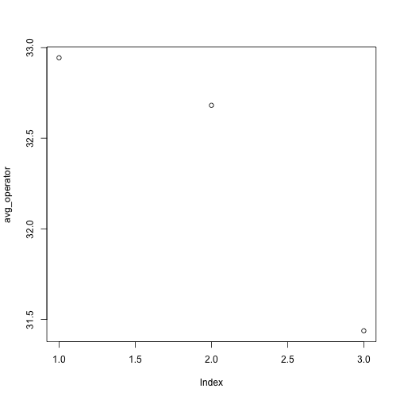
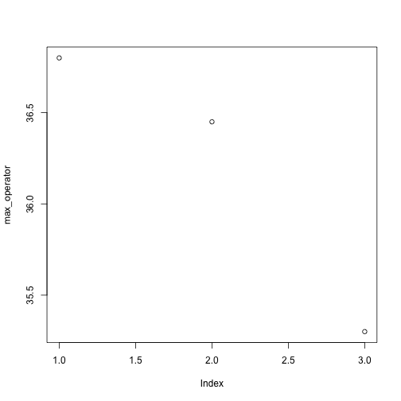
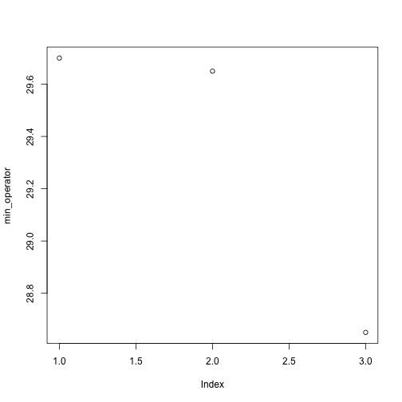
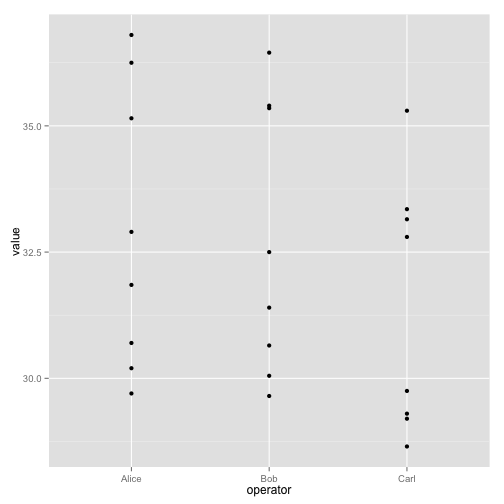
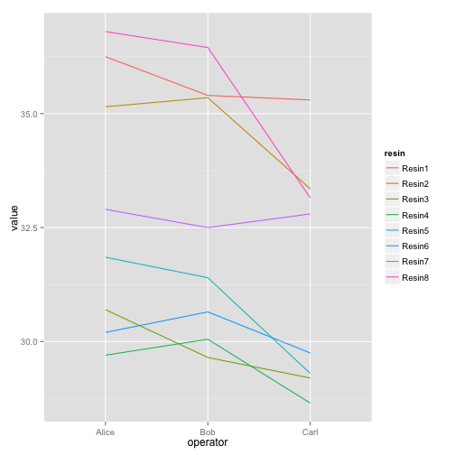
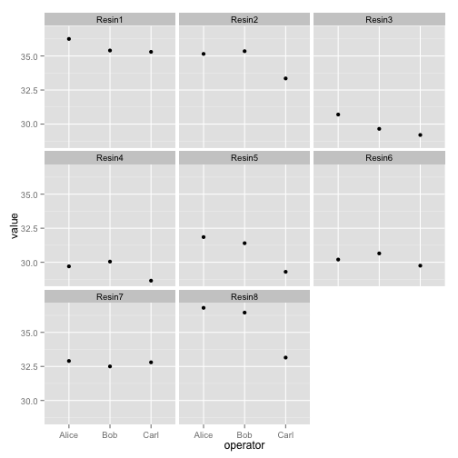

Programming with R
Welcome to R, let’s analyze some data
Learning Objectives
- Use R as a calculator.
- Assign values to variables.
- Read tabular data from a file.
- Select individual values and subsections from data.
- Perform operations on data.
- Display graphs.
Welcome to R
We will be working in RStudio.
Open RStudio, click on the “Console” pane, type 1+1 and press enter. R displays the result of the calculation.
* has higher precedence than +. We can use brackets if necessary ( ). Try 1+2*3 and (1+2)*3.
Spaces can be used to make code easier to read.
We can compare with < > <= >=. This produces a “logical” value, TRUE or FALSE.
Variables
A variable is a name for a value, such as x, current_temperature, or subject_id. We can create a new variable by assigning a value to it using <-
weight_kg <- 55RStudio helpfully shows us the variable in the “Environment” pane. We can also print it by typing the name of the variable and hitting Enter (or return). In general, R will print to the console any object returned by a function or operation unless we assign it to a variable.
weight_kg[1] 55
Examples of valid variables names: hello, hello_there, hello.there, value1. Spaces aren’t ok inside variable names. Dots (.) are ok, unlike in many other languages.
We can do arithmetic with the variable:
# weight in pounds:
2.2 * weight_kg[1] 121
We can also change an object’s value by assigning it a new value:
weight_kg <- 57.5
# weight in kilograms is now
weight_kg[1] 57.5
If we imagine the variable as a sticky note with a name written on it, assignment is like putting the sticky note on a particular value:

This means that assigning a value to one object does not change the values of other variables. For example, let’s store the subject’s weight in pounds in a variable:
weight_lb <- 2.2 * weight_kg
# weight in kg...
weight_kg[1] 57.5
# ...and in pounds
weight_lb[1] 126.5

and then change weight_kg:
weight_kg <- 100.0
# weight in kg now...
weight_kg[1] 100
# ...and weight in pounds still
weight_lb[1] 126.5

Since weight_lb doesn’t “remember” where its value came from, it isn’t automatically updated when weight_kg changes. This is different from the way spreadsheets work.
Vectors
We can make vectors with c( ), for example c(1,2,3), and do maths to them. c means “combine”. Actually in R, values are just vectors of length one. R is obsesssed with vectors.
myvec <- c(1,2,3)
myvec + 1[1] 2 3 4
myvec + myvec[1] 2 4 6
c(10, myvec)[1] 10 1 2 3
Access elements of a vector with [ ], for example myvec[1].
We will also encounter character strings, for example "hello". R also has something called “factors”, which are categorical vectors, and behave very much like character vectors (think the factors in an experiment). R likes turning character vectors into factors, which is usually fine.
R has various functions, such as sum( ). We can get help on a function with, eg ?sum. Because R is a language for statistics, it has many built in statistics-related functions. We will also be loading more specialized functions from “libraries”.
Lists
Vectors contain all the same kind of thing. Try c(42, "hello"). Lists can contain different kinds of thing.
We generally gives the things in a list names. Try list(num=42, greeting="hello"). To access named elements we use $.
mylist <- list(num=42, greeting="Hello, world")
mylist$greeting[1] "Hello, world"
I’m skipping a lot of details here.
This terminology is peculiar to R. Other languages make the same distinction they may use different words for vectors and lists.
If you’re not sure what sort of object you are dealing with you can use class, or for more detailed information str (structure).
Working with data
Loading data
Our example data is quality measurements (particle size) on some PVC plastic production, using eight different resin batches, and three different machine operators.
The data sets are stored in comma-separated values (CSV) format. Each row is a resin batch, and each column is an operator. In RStudio, open pvc.csv and have a look at what it contains.
read.csv(file="data/pvc.csv", row.names=1)The expression read.csv(...) is a function call that asks R to run the function read.csv.
read.csv has two arguments: the name of the file we want to read, and which column contains the row names. The filename needs to be a character string (or string for short), so we put it in quotes. Assigning the second argument, row.names, to be 1 indicates that the data file has row names, and which column number they are stored in.
The utility of a function is that it will perform its given action on whatever value is passed to the named argument(s). For example, in this case if we provided the name of a different file to the argument file, read.csv would read it instead. We’ll learn more of the details about functions and their arguments in the next lesson.
dat <- read.csv(file="data/pvc.csv", row.names=1)dat Alice Bob Carl
Resin1 36.25 35.40 35.30
Resin2 35.15 35.35 33.35
Resin3 30.70 29.65 29.20
Resin4 29.70 30.05 28.65
Resin5 31.85 31.40 29.30
Resin6 30.20 30.65 29.75
Resin7 32.90 32.50 32.80
Resin8 36.80 36.45 33.15
class(dat)[1] "data.frame"
str(dat)'data.frame': 8 obs. of 3 variables:
$ Alice: num 36.2 35.1 30.7 29.7 31.9 ...
$ Bob : num 35.4 35.4 29.6 30.1 31.4 ...
$ Carl : num 35.3 33.4 29.2 28.6 29.3 ...
read.csv has loaded the data as a data frame. A data frame contains a collection of “things” (rows) each with a set of properties (columns) of different types.
Actually this data is a matrix. In a data frame the columns contain different types of data, but in a matrix all the elements are the same type of data. A matrix in R is like a mathematical matrix, containing all the same type of thing (usually numbers).
R often but not always lets these be used interchangably. It’s also helpful when thinking about data to distinguish between a data frame and a matrix. Different operations make sense for data frames and matrices.
Data frames are very central to R, and mastering R is very much about thinking in data frames. However when we get to RNA-Seq we will be using matrices of read counts, so it will be worth our time to learn to use matrices as well.
Let us insist to R that what we have is a matrix.
mat <- as.matrix(dat)
class(mat)[1] "matrix"
Much better.
Manipulating Data
We can see the dimensions, or shape, of the matrix with the function dim:
dim(mat)[1] 8 3
This tells us that our matrix, mat, has 8 rows and 3 columns.
If we want to get a single value from the data frame, we can provide an index in square brackets, just as we do in math:
# first value in mat
mat[1, 1][1] 36.25
# a middle value in dat
mat[4, 2][1] 30.05
If our matrix has row names and column names, we can also refer to rows and columns by name.
mat["Resin4","Bob"][1] 30.05
An index like [4, 2] selects a single element of a data frame, but we can select whole sections as well. For example, we can select the first two operators (columns) of values for the first four resins (rows) like this:
mat[1:2, 1:4]Error in mat[1:2, 1:4]: subscript out of bounds
The slice 1:4 means, “Start at index 1 and go to index 4.” It’s the same as c(1,2,3,4).
The slice does not need to start at 1, e.g. the line below selects rows 5 through 8:
mat[5:8, 1:2] Alice Bob
Resin5 31.85 31.40
Resin6 30.20 30.65
Resin7 32.90 32.50
Resin8 36.80 36.45
We can use vectors created with c to select non-contiguous values:
mat[c(1,3,5), c(1,3)] Alice Carl
Resin1 36.25 35.3
Resin3 30.70 29.2
Resin5 31.85 29.3
We also don’t have to provide a slice for either the rows or the columns. If we don’t include a slice for the rows, R returns all the rows; if we don’t include a slice for the columns, R returns all the columns. If we don’t provide a slice for either rows or columns, e.g. dat[, ], R returns the full matrix.
# All columns from row 5
mat[5, ]Alice Bob Carl
31.85 31.40 29.30
# All rows from column 2
mat[, 2]Resin1 Resin2 Resin3 Resin4 Resin5 Resin6 Resin7 Resin8
35.40 35.35 29.65 30.05 31.40 30.65 32.50 36.45
Now let’s perform some common mathematical operations to learn about our inflammation data. When analyzing data we often want to look at partial statistics, such as the maximum value per resin or the average value per operator. One way to do this is to select the data we want to create a new temporary vector (or matrix, or data frame), and then perform the calculation on this subset:
# first row, all of the columns
resin_1 <- mat[1, ]
# max particle size for resin 1
max(resin_1)[1] 36.25
We don’t actually need to store the row in a variable of its own. Instead, we can combine the selection and the function call:
# max particle size for resin 2
max(mat[2, ])[1] 35.35
R also has functions for other common calculations, e.g. finding the minimum, mean, median, and standard deviation of the data:
# minimum particle size for operator 3
min(mat[, 3])[1] 28.65
# mean for operator 3
mean(mat[, 3])[1] 31.4375
# median for operator 3
median(mat[, 3])[1] 31.275
# standard deviation for operator 3
sd(mat[, 3])[1] 2.49453
What if we need the maximum particle size for all resins, or the average for each operator? As the diagram below shows, we want to perform the operation across a margin of the matrix:

To support this, we can use the apply function.
apply allows us to repeat a function on all of the rows (MARGIN = 1) or columns (MARGIN = 2) of a matrix.
Thus, to obtain the average particle size of each resin we will need to calculate the mean of all of the rows (MARGIN = 1) of the matrix.
avg_resin <- apply(mat, 1, mean)And to obtain the average particle size for each operator we will need to calculate the mean of all of the columns (MARGIN = 2) of the matrix.
avg_operator <- apply(mat, 2, mean)Since the second argument to apply is MARGIN, the above command is equivalent to apply(dat, MARGIN = 2, mean). We’ll learn why this is so in the next lesson.
Challenge - Slicing (subsetting) data
We can take slices of character vectors as well:
animal <- c("m", "o", "n", "k", "e", "y")
# first three characters
animal[1:3][1] "m" "o" "n"
# last three characters
animal[4:6][1] "k" "e" "y"
If the first four characters are selected using the slice
animal[1:4], how can we obtain the first four characters in reverse order?What is
animal[-1]? What isanimal[-4]? Given those answers, explain whatanimal[-1:-4]does.Use a slice of
animalto create a new character vector that spells the word “eon”, i.e.c("e", "o", "n").
Challenge - Subsetting data 2
Suppose you want to determine the maximum particle size for resin 5 across operators 2 and 3. To do this you would extract the relevant slice from the data frame and calculate the maximum value. Which of the following lines of R code gives the correct answer?
max(dat[5, ])max(dat[2:3, 5])max(dat[5, 2:3])max(dat[5, 2, 3])
A t-test or two
R has many statistical tests built in. A classic tests is the t test. Do the means of two vectors differ significantly?
mat[1,]Alice Bob Carl
36.25 35.40 35.30
mat[2,]Alice Bob Carl
35.15 35.35 33.35
t.test(mat[1,], mat[2,])
Welch Two Sample t-test
data: mat[1, ] and mat[2, ]
t = 1.4683, df = 2.855, p-value = 0.2427
alternative hypothesis: true difference in means is not equal to 0
95 percent confidence interval:
-1.271985 3.338652
sample estimates:
mean of x mean of y
35.65000 34.61667
Actually, this can be considered a paired sample t-test. Since the values can be paired up by operator.
t.test(mat[1,], mat[2,], paired=TRUE)
Paired t-test
data: mat[1, ] and mat[2, ]
t = 1.8805, df = 2, p-value = 0.2008
alternative hypothesis: true difference in means is not equal to 0
95 percent confidence interval:
-1.330952 3.397618
sample estimates:
mean of the differences
1.033333
Challenge - using t.test
Can you find a significant difference between any two resins?
When we call t.test it returns an object that behaves like a list. Recall that in R a list is a miscellaneous collection of data.
result <- t.test(mat[1,], mat[2,], paired=TRUE)
names(result)[1] "statistic" "parameter" "p.value" "conf.int" "estimate"
[6] "null.value" "alternative" "method" "data.name"
result$p.value[1] 0.2007814
This means we can write software that uses the various results from t-test, for example performing a whole series of t-tests and reporting the significant results.
Plotting
The mathematician Richard Hamming once said, “The purpose of computing is insight, not numbers,” and the best way to develop insight is often to visualize data. Visualization deserves an entire lecture (or course) of its own, but we can explore a few of R’s plotting features.
Let’s take a look at the average inflammation over time. Recall that we already calculated these values above using apply(mat, 2, mean) and saved them in the variable avg_operator. Plotting the values is done with the function plot.
plot(avg_operator)
Above, we gave the function plot a vector of numbers corresponding to the average per operator across all resins. plot created a scatter plot where the y-axis is the average particle size and the x-axis is the order, or index, of the values in the vector, which in this case correspond to the 3 operators. Let’s have a look at two other statistics: the maximum and minimum inflammation per operator.
max_operator <- apply(mat, 2, max)
plot(max_operator)
min_operator <- apply(dat, 2, min)
plot(min_operator)
Challenge - Plotting data
Create a plot showing the standard deviation of for each operator across all resins.
A proper example of a data frame
Instead of storing this data in a matrix, we could store each measurement in a row of a data frame. We can convert to this “long” form with the melt function in the library reshape2.
library(reshape2)
long <- melt(mat)
head(long) Var1 Var2 value
1 Resin1 Alice 36.25
2 Resin2 Alice 35.15
3 Resin3 Alice 30.70
4 Resin4 Alice 29.70
5 Resin5 Alice 31.85
6 Resin6 Alice 30.20
colnames(long) <- c("resin","operator","value")
head(long) resin operator value
1 Resin1 Alice 36.25
2 Resin2 Alice 35.15
3 Resin3 Alice 30.70
4 Resin4 Alice 29.70
5 Resin5 Alice 31.85
6 Resin6 Alice 30.20
This long form is often the best form for exploration and statistical testing of data.
R has a built in plotting facility, with functions like plot.
A more recent and much more powerful plotting library is ggplot2. The syntax is a little strange, but there are plenty of examples in the online documentation.
If ggplot2 isn’t already installed, we need to install it.
install.packages("ggplot2")library(ggplot2)Loading required package: methods
A simple example:
ggplot(long, aes(x=operator, y=value)) + geom_point()
The call to ggplot sets up the basics of how we are going to represent the various columns of the data frame. We then literally add layers of graphics to this.
ggplot(long, aes(x=operator, y=value)) + geom_boxplot() + geom_point()
ggplot(long, aes(x=operator, y=value, group=resin, color=resin)) + geom_line()
ggplot(long, aes(x=operator, y=value)) + facet_wrap(~ resin) + geom_point()
This long form is also ideal for statistical testing. Here is a one-way ANOVA.
oneway.test(value ~ resin, data=long)
One-way analysis of means (not assuming equal variances)
data: value and resin
F = 26.6047, num df = 7.000, denom df = 6.537, p-value = 0.0002445
A two-way ANOVA analysis would be better here. This is well beyond the scope of this course, but could be achived with something like:
anova(lm(value ~ resin + operator, data=long))Analysis of Variance Table
Response: value
Df Sum Sq Mean Sq F value Pr(>F)
resin 7 141.973 20.2818 39.615 3.599e-08 ***
operator 2 10.359 5.1795 10.117 0.001913 **
Residuals 14 7.168 0.5120
---
Signif. codes: 0 '***' 0.001 '**' 0.01 '*' 0.05 '.' 0.1 ' ' 1